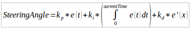

Beaver Works Technical Report - Nam Mannucci
Project Overview
Beaver Works Summer Program 2016 is comprised of four intensive weeks of working with a robotic RACECAR.
The goal of the program is to learn how to program autonomous systems using the ROS operating system and Python programming language to preform various tasks.
Students from STEM schools around the nation and from local Boston schools came to this program to learn, compete and to ultimately have fun in the MIT setting.
The Program is based on 6.141 Robotics Science and Systems taught to undergraduates at MIT.(1)
Although we didn't have the amount of time that the undergrad students got, the professors and assistants engineered a course that could cover everything that was important and feasible for high school students.
Students had to complete various pre-course assignments to prepare for the program.
This included learning the basics of the Python Programming and getting familiar with the concepts of ROS.
The first day of class was a review day of the stuff that should have been covered at home before.
The students were chosen based off of recommendations of various teachers at their respective schools.
The head of the program, Dr.
Robert Shin contacted various high schools, many of them part of the math consortium, and offered free admission as part of his vision to extend the incredible work done at MIT to high school students.
The residential students, the students not from Boston, stayed at Boston University's Claflin Hall.
The commuter students, the students from Boston and the surrounding areas, traveled to and from MIT and stayed at home.
Outside of the program, the commuter and residential students had Wednesday evening to socialize.
RACECAR Specifications
The equipment:
Remote Controller
Wireless Router
RACECAR:
Zed Stereo Camera
2D Hokuyo LIDAR
Inertial Measurement Unit
4 Wheel Driving, Ackermann Front Wheel Steering
Nvidia Jetson TX1
(2)
Four Sections Detailing Your Technical Learning for Each Week
Week 1: Move
Each week was a little bit different and each had a different theme.
The first week was all about motion of the RACECAR.
The end goal for the first week was to create a ROS node that would publish to the car a speed and a steering angle to "follow a wall".
What is meant by that is that the car would be a set distance away from the wall at all possible times and would follow the curvature and shape of the wall.
This is done by minimizing the difference of the desired distance with the actual distance from the wall to approximately zero.
Of course the minimization can not be zero at all, but it can be a very small number.
In order to do this, we used control systems Bang- Bang and Proportional Integral Derivative which is also known as PID.
Error = Desired Distance – Sensed Distance
Our approach was to continuously calculate a steering angle using control systems.
The speed of the car was deemed constant, as for the race it was to go as fast as possible.
Bang-Bang is a very primitive system.
If the error was positive, then turn left.
If the error was negative, then turn right.
(Assuming following a wall on the right) This is very primitive because the car would assume a sinusoidal motion.
Although this was not what was favorable, it worked.
Though the better solution is PID.
Before PID, the LIDAR should be discussed next as it is extremely important to wall follow.
It is a 2D planar laser that fires light to a point and the time it takes to come back is used to calculate the distance.
Distance is equal to half the product of the speed of light and the time it takes to come to and back.
The range of the LIDAR is a 270 degree arc around the car.
The LIDAR fires four laser beams per degree and this is collected in an array of numbers where the index corresponds to the one fourth of the degree.
Or 0 to 1080.
For wall following, the perpendicular distance from the car to the wall needs to be calculated.
This distance is the min distance of a range of the array.
This is called one-point calculation.
Two point calculation is a more precise calculation because there is a case where the ranges of LIDAR points you look at might not contain the perpendicular distance.
The two point calculation is used to mimic finding the height of a triangle given to sides and the included angle.
From the directed area product to find the area of a triangle (dividing it by two), that area must equal the famous equation area is equal to the product of the base times the height divided by two.
Using the cosine law to find the base, a, b, and angle known, h can be found.
This is known as two-point calculations.
In our controls, our desired distance is in the middle of the track.
By taking two points from either side of the car, preforming the height calculation on both of them, then finding the the average between the two is the middle of the track.
The error is then calculated with the desired distance being that average, and the sensed distance is the two point calculation on the desired side of the car.
Adding this two the calculation of the steering angle is as easy as applying a control system to try to drive the error to zero.
Proportional Integral Derivative:

Proportional Integral Derivative is a very common solution to this problem.
Proportional, the first term, refers to the minimizing of error based on the error itself, and a proportionality constant.
Derivative refers to the minimization based on how the error is changing.
If the rate of change is fast, it would oppose this change and lower the steering angle.
The derivative constant is important to scale the effect to appropriate size.
The integral term adds up all the error values up to that point in time and scales the current steering angle.
Again there is a constant to scale the effect up to size.
In the code, P, I and D are all implemented.
Different functions are used to pass the error in and get a steering angle value.
Derivative and Integral were weird to calculate as there is no infinitesimally small value in python.
Everything was considered discrete and the rate of change was calculated using every time the data of the error would come in, that is every time the laser sensor would send data.
Using discrete values an integral term was calculated using Riemann Sums.
Testing PID is a process that involves tuning the proportional, derivative and integral constants.
Good advice involves starting the numbers small, then increasing it slowly.
The higher the constants the more sensitive the controller, but that also means a jerky movement, which isn't the right thing.
Starting out with the proportional controller, the car seemed very smooth, but the oscillations were there.
The characteristics of the oscillations included a high wavelength, low frequency, and a high amplitude.
Adding the derivative term to the mix helped a lot by decreasing the oscillations.
However, this time, the characteristics of the oscillations included a low wavelength, high frequency, and a very low amplitude.
The car was very jerky, responsive and not really what our team was looking for.
What was interesting was the integral term.
Adding it really helped the motion as the controller was a nice balance from responsive to smooth, although it didn't take curves very well.
The competition went as follows.
For wall detecting on the left and right, the decision was to only include proportionality as it was smooth and well tested.
Although the responsiveness was low, it worked well.
The fun challenge of placing it in the center and letting it follow either wall went well with a proportional and derivative controller.
It shot to the right wall and quickly swerved without crashing into it and wall followed.
It was a success.
Although our algorithms were very standard and the time trials went smoothly, hardware constraints affected the performance of the car.
The time it took to run the code and when it got to the car had a delay, and the batteries weren't that great.
It did effect the races quite a bit.
Our team accomplished a lot.
A working wall follower and a nice understanding of how the car moved was gained from week one.
It moved smoothly into week two, which was all about using the zed camera for movement.
Week 2: Blob Detection
Week two started with using the camera mounted on the front of the car.
This is a different approach to the laser sensor.
The laser sensor sees in a plane around in a certain range.
It outputs a list of ranges to the first object it picks up.
The camera, in contrast, gives a colored image with no depth.
It sees a huge field of view but the data is a lot bigger than just a list numbers.
Week two is all about working with the camera and laser sensor to cover up its weaknesses.
The goal for week two was to visually servo to a colored paper and turn either right or left based on the color, and wall follow.
This problem is a complex problem that involved several components.
As a team our approach was to have it divided into two ROS nodes.
One node was to publish the filtered out image data and find that colored piece of paper.
The second node was a continuation on the wall detector, but instead to only wall follow once it got close enough to the paper.
The second node also handled the visual servo procedure that followed the colored paper.
What makes ROS especially nice is the communications between each node and the ease of passing data in whatever form you want to other nodes.
Implementation was smooth.
For the second node, assuming that the blob was found and the correct data was passed, the car would servo then wall follow.
Delegation of work was very easy.
The biggest learning curve in week two was something called blob detection.
Blob detection refers to the act of using an algorithm to identify a specific object in a picture based on characteristics.
The identification consists of the specific place of the blob in pixel coordinates, the size of the blob in pixels, the color(s) of the blob and the centroid, or given center of the blob.
To do this the library chosen was OpenCV to manipulate images.
Image masks are the key to this problem.
After applying a mask with specified values for hue, saturation and value, the image left is just of the values you specified.
In ROS, a subscriber to the zed camera was created.
It subscribed to the image that the zed camera outputted.
Using the OpenCV library to manipulate images, a mask was applied.
HSV, or hue saturation, value color system was used.
The reason for this is RGB/BGR isn't as clear with what color it is than hue which is a certain angle.
Using upper and lower bounds for the hue, saturation and value and filtering the image using that, blob detection is next.
OpenCV’s find contour function finds all the blobs by comparing an image to a mask and drawing lines around the colors that are the same.
Moments can be used to find the specific center.
Using the dimensions of the image produced by zed, the pixel coordinates of the center of the blob and the area of the blob, based on the color and how big the blob is, moving towards a blob is a step away.
To visual servo, PID is used.
Half the image is the sensed distance and the blob x coordinate is the desired distance.
Error is plugged into the PID function and the car servos towards the colored blob.
After a certain condition, wall following ensues.
In the code, we compare heights of the image and the blob and use a threshold to trigger an event based on this.
The wall following node takes in a custom message from the blob detector node and filters the values.
In the wall following node, a little turn to get it oriented in the correct orientation is used to make up for the fact that the LIDAR chooses points to the side of it and not in front.
A red blob means to turn left and follow the right wall.
A green blob means to turn right and follow the left wall.
In the wall follow code, the logic switches the control from visual servo to wall following.
The competition seemed to go well however, the logic errors were revealed.
As it servoed to the blob, it passed the threshold and turned to start wall following.
However, half way to the end, another object showed us that the logic flipped the wall to follow, and it started following a non-existent right wall.
Although this was not successful, it helped in improving the code and making it better for the next test.
Week 4: Obstacles
Week three was all about mapping and localization.
However, wasn't the main focus after all.
After plan changes, it was an exploring space challenge that included avoiding obstacles on the go.
The main algorithm to be implemented is a potential field.
In electrostatics, Coulomb's Law is used to find the force between two charged particles.
The electric potential energy is the energy of the system based on the state of the particle.
Placed inside an electric field there will be a force acted on it when it is released.
The energy that is needed to hold it in place is the potential.
In mechanics, to find the force you take the derivative of the potential with respect to the distance.
Electric potential energy is an inverse relationship.
Disregarding charge and any other constants, potential is equal to the reciprocal of the distance to it.
Given the mechanics view of potential energy, to find the force exerted at a distance, the position derivative can be taken of the potential.
Given the rectangular coordinates for the position of the car, the position of the obstacle and the distance formula, the potential can be solved for.
Take the position derivative with respect to x and y to calculate the gradient.
Here is the derivative with respect to x.
This is applied to every point around the car sensed by the laser.
Each of these points is assigned a 'charge' that applies a repulsive force to the car.
Just behind the car is an invisible charge that provides a boost in speed to drive it forward.
With each of these charges working together, it creates a system where obstacles are avoided with driving forward as a constant.
For the challenge, sensing blobs was also an important aspect.
Using the same sort of algorithms as week 2, blue and yellow were added to make it a bit more challenging.
On top of that, the car must recognize those blobs while it avoids obstacles, and output an image with the name that describes the blob's color AND shape.
In order to figure out the other colors, a similar mask like approach was used but the HSV values were tuned to fit the lighting and color.
Shape was another story however, but fortunately OpenCV has a function that finds an approximate polygon to fit the contours of the blobs.
ApproxPolyDP is that function.
It outputs the vertices of the approximate polygon.
Taking the length of the array gives the amount of vertices which in turn gives the number of sides.
Although this seems amazing, in practice everything is a bit fickle.
The challenge didn't go as planned.
We were last to go but the day ended faster than we could put our car onto the track.
Week 4: Final Race
Week 4 is all about preparing for the final challenges and the grandprix race.
The two tech challenges are turning the correct way and exploring space.
These challenges were done in week 2 and week 3 respectively.
The biggest task was to implement a robust algorithm that would drive cars down a trace track and turn the correct ways.
In order to do this task we separated the code into 4 different nodes.
The nodes are, potential field, blob detector, wall follower, and finally the master node.
Potential Field is the algorithm that avoided any static obstacle.
It utilized the LIDAR and treated every point found like a small positive charge.
Blob detector is the one that found colored blobs.
It found green and red papers and outputted the size and the moment.
Wall follower is the code like the second challenge.
It used blob detector to either follow the right wall or the left wall.
With all of these nodes written, the final task was to just put it all together.
The master node chose which driving algorithm out of potential field or wall follower to run.
The decision is as follows.
Use potential field by default, but if a blob is detected, if the size of the blob is greater than a certain value, use wall following.
The reason for this is potential field is good for avoiding obstacles.
It doesn't oscillate like crazy like the wall following code with wrong PID values, and it doesn't have to worry about any changes in the desired distance.
Wall following is initiated when a blob is close enough.
The race track has one caveat: a shortcut that has a dead end.
When a green marker is displayed in front of the shortcut, the car can go in the shortcut and come out the other side.
But when a red marker is displayed, the shortcut isn't necessarily closed from the beginning, but it leads to a dead end.
Getting stuck in there would mean most likely a DNF.
When a red marker is displayed, our car follows the right wall, essentially turning to go the normal way.
When a green marker is displayed, it follows the left wall which goes straight into a shortcut.
Testing Thursday and Friday was a bit of a hassle as all the teams wanted to get a chance to test near the fork in the road to the shortcut.
The testing was pretty straight forward.
It was mostly adjusting the HSV values and the blob area threshold.
One of the greatest challenges in testing was the shifting light.
Spending the entire day there the morning, afternoon, evening light reflected off of the colored markers.
Constantly trying to anticipate the mood only gets us to needing new values.
Constantly the zed camera detected a giant red blob that took up the whole screen.
The final competition was surprising.
Not working the day before was aggravating, but it turned out to work well.
Probably the HSV values in the morning worked the best.
The shortcut round was the fastest but after passing through the threshold the car was a bit wobbly.
The non shortcut rounds the car turned incredibly close to the threshold but recovered quickly.
Technical Conclusions
Some goals were met.
Moving the car autonomously was a goal that our team met.
Wall following and potential field worked wonders.
Although a goal that would have been nice to meet was an algorithm that could navigate through dynamic targets.
In the heat trials and in the nine car race, the potential field algorithm couldn't handle all the cars there as they were all repellent forces.
Maybe exploring that a bit more would have been exciting as well.
Blob detection was good and it worked.
But detecting certain images would have been a goal that I would have liked to meet.
In the obstacle challenge, the car only detected the solid colors and shapes, but not the images so much.
Week 2's visual servo contest is another goal that wasn't met.
Focusing on using the camera to move in a specified motion would have been something that I would want to focus on if there was more time.
The results of the race was definitely an accomplishment.
Going at the maximum capped speed of approximately 3.
0 meters per second and with minimal jerkiness around the turns, it worked really well! The turning at the shortcut algorithm could have been a bit better and the recovery period in the shortcut had a bit of oscillation problems.
Getting up to the point, I definitely learned a lot about ROS, OpenCV, Linux and Python.
Personal Reflection
I think this program helped me understand how engineering works.
It isn't so much as the one man genius as much as a team working together to create big things.
I liked the communication lectures as they were fun and light hearted but also very important.
I thought that the seminar and lectures were well done and they really helped with understanding of the concepts.
However, one suggestion I have is the fact that a lot of the lectures were very high level, meaning that with the coding and actually using the concepts, there should have been a bit more on that.
Another key thing that I learned is how really to use the command line.
Before the program I knew what is is and how to use it.
But using ROS and emphasizing the command line more than ever, I find myself using it for tasks that don't require it.
I think the program in general really helped make programming and engineering fun and enjoyable, rather than a turn off.
It emphasized the use of Python as a less code more things done type of language which was nice, being a Java user before.
I think it was just a really fun experience that I am grateful to be a part of.
Thank You
I would just like to thank the Beaver Works Staff and all the people that were involved, the students, the staff, the assistants, etc... for making this happen!
I really couldn't have asked for a more amazing summer!
Citations
(1) MIT Beaver Works Summer Program Overview Ppt
(2) Introduction to the RACECAR Platform by Owen Guldner Ppt